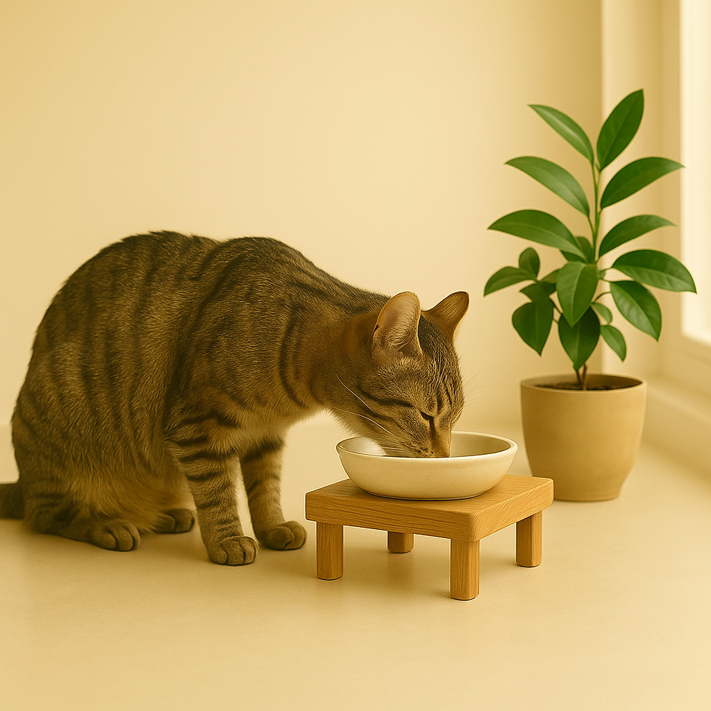

Por Que os Comedouros Altos São Importantes para Gatos?

Por Plantas & Gatos — bem-estar felino com informação acessível
Você já reparou na postura do seu gato quando ele come? Se o pote de comida fica direto no chão, ele precisa abaixar bastante o pescoço e curvar as costas. Parece inofensivo, mas essa posição pode trazer vários problemas para o seu felino.
🍽️ Benefícios para a Digestão
Quando o gato come com a cabeça muito baixa, o esôfago fica numa posição desfavorável. A comida precisa “lutar contra a gravidade” para descer até o estômago. Isso pode causar engasgos, regurgitação e até vômitos logo após as refeições. Com um comedouro elevado, o alimento desce naturalmente pelo esôfago, facilitando toda a digestão.
🦴 Conforto para as Articulações
Gatos mais velhos, com artrite ou problemas nas articulações, sofrem ao se abaixar para comer — é como se nós tivéssemos que fazer agachamentos toda vez que fôssemos nos alimentar. Um comedouro alto elimina esse desconforto, tornando a refeição um momento prazeroso e não doloroso.
🧭 Postura Mais Natural
Na natureza, os gatos geralmente comem suas presas em superfícies elevadas ou em posições que não exigem tanto esforço do pescoço. O comedouro alto imita essa condição, permitindo que o gato mantenha a coluna alinhada e o pescoço em posição neutra.
💨 Redução de Ar Engolido
Quando o gato come muito curvado, tende a engolir mais ar junto com a comida. Isso causa gases, desconforto abdominal e aquela sensação de barriga inchada. A posição elevada ajuda a minimizar esse problema.
🧼 Higiene e Praticidade
Comedouros elevados geralmente ficam mais limpos, pois dificultam que o gato jogue areia ou sujeira da patinha dentro do pote. Além disso, são mais ergonômicos para nós, humanos, na hora de limpar e reabastecer.
📏 Altura Ideal
O comedouro deve ficar na altura do peito do gato quando ele está em pé. Assim, ele come com o pescoço levemente inclinado para baixo (cerca de 15°), que é a posição ideal. Não precisa ser muito alto — 10 a 15 cm costuma funcionar bem para a maioria dos gatos adultos.
✅ Vale a Pena Investir?
Definitivamente, sim! Principalmente para gatos idosos, com problemas digestivos ou articulares. Mas mesmo gatos jovens e saudáveis se beneficiam dessa mudança simples. O investimento é pequeno e o resultado é um bichano mais confortável e saudável.
👀 Observação Prática
Experimente observar seu gato nas próximas refeições. Se ele vomita com frequência depois de comer, parece desconfortável ao se alimentar ou come muito rápido, um comedouro alto pode ser exatamente o que ele precisa!
← Voltar para o blog